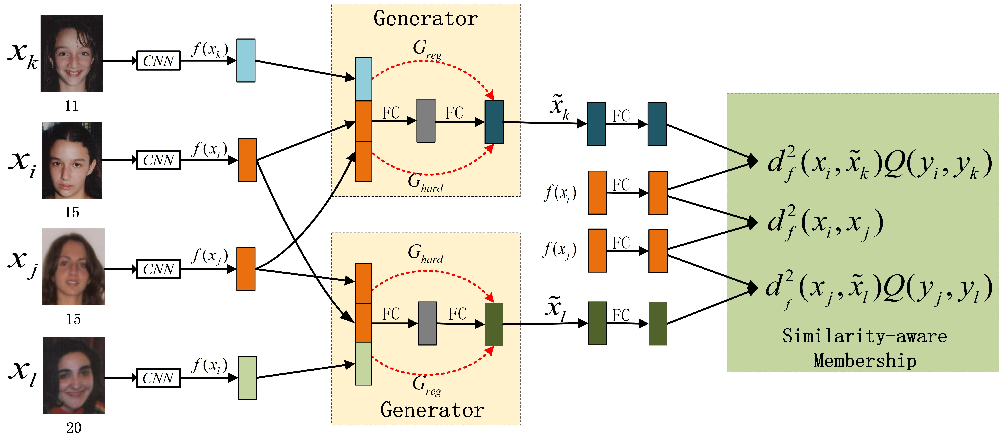
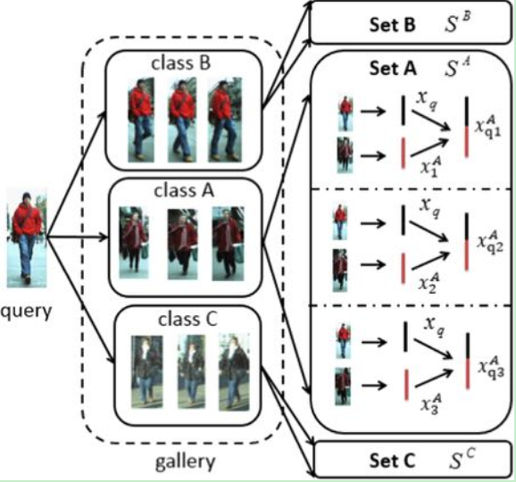
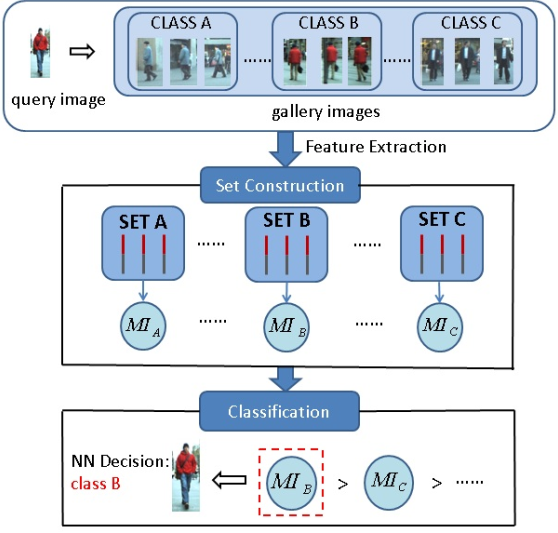

Hao Liu
刘昊
About Me
|
Hao Liu, Ph.D, Associate Professor School of Information Engineering, Ningxia University, Yinchuan, China Research on facial analysis and machine learning, particularly face alignment, facial age estimation, deep metric learning and deep reinforcement learning. Ph.D supervised by Professor Jie Zhou and Professor Jiwen Lu. Master supervised by Professor Qingming Huang. Contact Email: liuhao [at] nxu.edu.cn |
Education

Sep. 2014 - Jan. 2018, Ph.D Degree of Control Science and Engineering, Tsinghua University
Sep. 2011 - Jul. 2014, Engineering Master Degree of Computer Technology, University of Chinese Academic of Sciences

Jul. 2007 - Sep. 2011, Bachelor Degree of Software Engineering, Sichuan University
News
- [2019/03/11] One paper on facial age estimation is accepted to ICME 2019 as Oral Presentation.
- [2018/12/31] I serve as the Associate Professor in Ningxia University.
- [2018/12/02] One paper on face alignment is accepted to T-PAMI as Regular Paper.
- [2018/08/20] I give a talk on Deep Metric Learning for Pattern Recognition at the Tutorial of ICPR'18.
- [2018/07/01] I am honored with the Outstanding Ph.D. Thesis of Tsinghua University.
- [2018/05/15] I give a talk on Representation Learning for Face Alignment and Recognition at the Tutorial of FG'18.
- [2018/12/21] One paper on facial age estimation is accepted to T-CSVT as Regular Paper.
- [2017/10/10] I am honored with the National Scholarship of Tsinghua University.
- [2018/12/02] One paper on video-based face alignment is accepted to T-PAMI as Regular Paper.
Publications
|  |
Similarity-Aware Deep Adversarial Learning for Facial Age EstimationPenghui Sun, Hao Liu*, Xin Wang, Zhenhua Yu and Suping Wu. IEEE International Conference on Multimedia and Expo (ICME 2019), Oral Presentation. [In Press] |

|
|

|
Ordinal Deep Learning for Facial Age EstimationHao Liu, Jiwen Lu*, Jianjiang Feng and Jie Zhou. IEEE Transactions on Circuits and Systems for Video Technology (T-CSVT), 29(2): 486-501, 2019. [Paper] |
|
|
Two-Stream Transformer Networks for Video-based Face AlignmentHao Liu, Jiwen Lu*, Jianjiang Feng and Jie Zhou. IEEE Transactions on Pattern Analysis and Machine Intelligence (T-PAMI) , 40(11): 2546-2554, 2018. [Paper] |

|
Label-Sensitive Deep Metric Learning for Facial Age EstimationHao Liu, Jiwen Lu*, Jianjiang Feng and Jie Zhou. IEEE Transactions on Information Forensics and Security (T-IFS), 13(2): 292-305, 2018. [Paper] |

|
Learning Deep Sharable and Structural Detectors for Face AlignmentHao Liu, Jiwen Lu*, Jianjiang Feng and Jie Zhou. IEEE Transactions on Image Processing (T-IP) , 26(4): 1666-1678, 2017. [Paper] |

|
Group-Aware Deep Feature Learning for Facial Age EstimationHao Liu, Jiwen Lu*, Jianjiang Feng and Jie Zhou. Pattern Recognition (PR), 66: 82-94, 2017. [Paper] |

|
Ordinal Deep Feature Learning for Facial Age EstimationHao Liu, Jiwen Lu*, Jianjiang Feng and Jie Zhou. IEEE International Conference on Automatic Face and Gesture Recognition (FG 2017), 157-164. [Paper] |
|  |
Set-Label Modeling and Deep Metric Learning on Person Re-IdentificationHao Liu, Bingpeng Ma, Lei Qin*, Junbiao Pang, Chunjie Chen and Qingming Huang. Neurocomputing, 151: 1283-1292, 2015. [Paper] |
|  |
Set-based Classification for Person Re-Identification Utilizing Mutual-informationHao Liu, Lei Qin*, Zhongwei Cheng and Qingming Huang. IEEE International Conference on Image Processing (ICIP 2013), 3078-3082. [Paper] |
Selected Honors and Awards
- Excellent Undergraduate Student of Tsinghua University, 2018
- Outstanding Ph.D. Thesis of Tsinghua University, 2018
- National Scholarship of Tsinghua University, 2017
Professional Activities
- Reviewer, IEEE Transactions on Pattern Analysis and Machine Intelligence, 2018-.
- Reviewer, IEEE Transactions on Image Processing, 2018-.
- Reviewer, IEEE Transactions on Circuits and Systems for Video Technology, 2018-.
- Reviewer, IEEE Transactions on Multimedia, 2018-.
- Reviewer, IEEE Access, 2018-.
- Reviewer, Pattern Recognition, 2016-.
- Reviewer, Journal of Visual Communication and Image Representation, 2017-.
- Reviewer, AAAI Conference on Artificial Intelligence, 2018-.
- Reviewer, IEEE International Conference on Multimedia and Expo, 2018-.
- Reviewer, IEEE International Conference on Image Processing, 2017-.